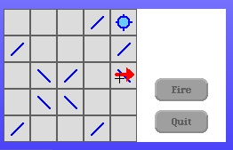
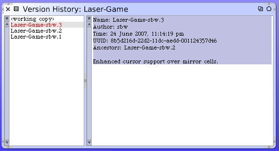

We should now be seeing a cross-hair cursor when we travel over mirror cells. This will be true only during the times we are hovering over one of the clikc regions.
As a final step we should once again save our new package version with this further enhancement. There should now be a 3rd version of our package.
